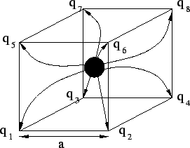
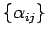
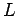
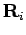
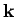

Next: Yukawa screening
Up: memd
Previous: Time integrator
The interpolation of the charges onto the lattice gives rise to the
artificial force exerted on the particle by its own field. In order to
cure this remedy, the direct subtraction of the self-energy is introduced.
For the interpolated charge cloud the self-energy can be directly
calculated (see Ref.[2]). For the simple cubic
lattice in three dimensions the linear interpolation will give 8
charges which are placed at the corners of the cube with edge length
 (see Fig.
(see Fig. ![[*]](file:/usr/share/latex2html/icons/crossref.png) ).
).
Figure:
Linear interpolation scheme
|

|
Therefore in our case the self-energy is a symmetric bilinear form
defined by the matrix
, the elements of
which do not depend on the position of the charge. In our algorithm
the values of the coefficients
where  is tne number of lattice points per dimension,  coordinates of the interpolated charges and  the wave vector, are calculated during the initialization step and are used in the
calculation of the self-force. The value of the self-force which has
to be subtracted from the overall forces is given by the following
ansatz
Next: Yukawa screening
Up: memd
Previous: Time integrator
Igor Pasichnyk
2004-09-07